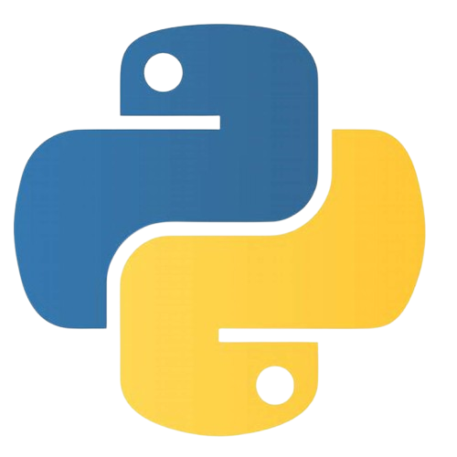
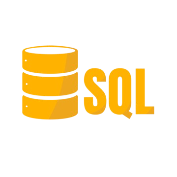

À propos
👋 Je m'appelle Loris, issu d’une formation en mathématiques, j’ai développé un esprit analytique rigoureux et une forte capacité de résolution de problèmes.
🎓 Je poursuis actuellement une licence professionnelle en Métiers du Décisionnel et Statistique (MDS), qui me permet de consolider mes compétences en programmation (Python, R, SQL) et en statistiques appliquées à la data science.
🎯 Mon objectif est de devenir Data Analyst et de mettre mes compétences au service de la prise de décision basée sur les données. Je maîtrise des outils comme Power BI, Excel et Python pour produire des analyses claires, reproductibles et impactantes.
💼 Mes premières expériences, notamment chez Veracyte et à l’Université d’Avignon, m’ont permis de développer une réelle autonomie, une bonne capacité d’adaptation et un goût pour le travail en équipe.
📊 Compétences clés : Analyse statistique 📈, Data visualisation 📊, Programmation Python 🐍 / R 📘 / SQL 💾, Power BI 📊, Esprit critique 💡, Vulgarisation scientifique 🧠
🚀 Je suis à la recherche d’une alternance ou d’un premier poste stimulant en tant que Data Analyst, où je pourrai continuer à apprendre tout en apportant une réelle valeur ajoutée grâce à mon approche méthodique et orientée résultats.
Mes Projets
Compétences

Python (Pandas, NumPy, Matplotlib)
R (ggplot2, dplyr, tidyr)

SQL
Power BI
Excel
SAS